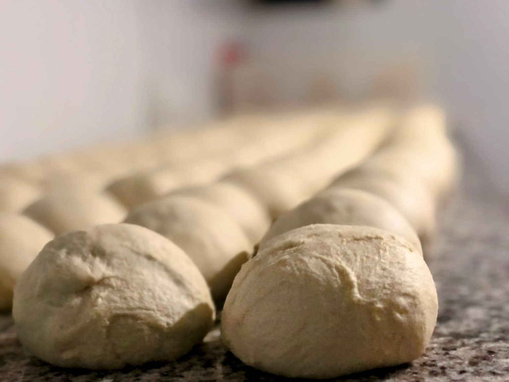

Nuestro inicio
Katané Pizza nació del sueño de tres sicilianos que llegaron a Panamá con una idea clara: compartir la verdadera esencia de la cocina siciliana. Con esfuerzo, pasión y el deseo de traer a la mesa un pedacito de Italia, abrieron la primera sucursal en agosto de 2015 bajo el nombre de Speedy Pizza.
Desde Catania llegaron con la misma receta que sus madres y abuelas hacían en Sicilia. Sin atajos, sin compromisos: una masa que tarda 48 horas, ingredientes seleccionados y el calor de la hospitalidad italiana.
Con el tiempo, nuevos socios se sumaron y el nombre evolucionó a Katané —el nombre griego de Catania— para honrar las raíces de donde todo nació.
"Nunca quisimos traer pizza italiana a Panamá. Quisimos traer Sicilia." — Los fundadores de Katané
Nuestro equipo
Con el tiempo, dos socios cambiaron y se unieron a este proyecto, aportando su experiencia y compromiso. Hoy, los tres trabajan unidos para mantener viva la tradición, crecer con propósito y llevar la experiencia Katané cada vez a más personas.
No importa a cuál de sus sucursales vayas: en todas encontrarás la misma calidez, la misma hospitalidad y los mismos ingredientes frescos que los caracterizan desde el inicio.
Nuestra masa, nuestro orgullo
La historia de cada pizza comienza en nuestra masa artesanal. Preparada con fermentación lenta y paciencia, es ligera, aromática y con un sabor inigualable. Este detalle, que parece simple, es la base que nos distingue y que refleja el respeto por las recetas italianas tradicionales.

Lo que nos define